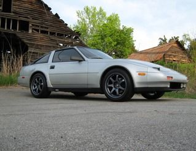

-
If you bothered with one side I'd do the other just to keep things even. -
Personally I think the asymmetrical 280ZXT vent, with symmetrical fender vents would be the shit. I don't think another drop vent would look good at all though. There's doing it right, then there is over doing it. -
If I put the other 280zx vent in I think I'm going to go ahead and do the center drop vent for the radiator. It'll be kinda along the lines of this :twisted:

"Beer is proof that god wants us to be happy" - Benjamin Franklin -
Yeah, I love SKOLJACK's proudear. If you pull it off it will be tits on wheels. -
But it does definetely look cool right now with just the 280 and the fenders.
"Beer is proof that god wants us to be happy" - Benjamin Franklin -
What hood is this? The scoop looks wider and has more lip than proudears.
http://z31performance.com/showthread…-My-86-Project
VG33 HE351. "No seriously, it's almost done."

-
The 200ZR 1986 style hood still makes me cum buckets.DD:
86 Black Turbo 5spd
The Fallen:
84 red n/a auto Slicktop, 86 Black 2+2 n/a 5spd
Parting Currently:
86 White Turbo 5spd, 88 n/a 5spd, 84 AE, 88 Shiro #64
Garage Sale -
One of Proudear's early versions of hoods?Jared86NA wrote: What hood is this? The scoop looks wider and has more lip than proudears.
Here it is in CF?
-
Thanks for the second opinion. It's so close, it's gotta be. The angle and lighting make them look different I s'pose.inqui-Z-tor wrote:
One of Proudear's early versions of hoods?
Here it is in CF?
http://z31performance.com/showthread…-My-86-Project
VG33 HE351. "No seriously, it's almost done."
-
the width in the one in CF is smaller then the one in width on the white.
idk thats the way i see it.
he gives me shit all the time about the money i spend on my car but he simply doenst understand what type of "high" you get from watching a stock car transform into something alive with as much emotion and feelings as any human.Originally posted by PurePontiacKid -
these pics are old and your gonna laugh at me but they're the best pics i have of my old 86t's hood

-
I am still waiting for one of you guys (1artworkz?) to replicate either one of Proudear's vented hoods......
I don't care if it's carbon fiber or fiber glass, just want one without paying crazy shipping from Japan......Matte Black 86T - Sold -
I want the vent on the kouki bonnet for my zenki. I don't like the narrow vent on the zenki bonnet, nor do I like the vents above the strut towers.
If the kouki bonnet was replicated with headlight cutouts to suit both zenki and kouki (not at the same time obviously), I'd be interested in one.
-
+1Mitchd03 wrote: If the kouki bonnet was replicated with headlight cutouts to suit both zenki and kouki (not at the same time obviously), I'd be interested in one.
The regular non-vented kouki CF bonnet is sold everywhere, decent price too. However, MSA seem to have their own secret source of acquiring the CF bonnet, since they are the only one to offer non-vented zenki CF bonnet. I wonder if that same source is able to offer one with the vented design......Matte Black 86T - Sold -
[quote]StreetFighter wrote:you are a complete moron and no nothing about the auto industry, wind tunnels were first inducted in the late 50's as an accurate measure of wind resitance, which opened auto makers eyes to the fact that round and smooth is not aero dynamic, sharp, straight edges are the least wind resistant, a round car creates back draft, your a complete idiotOriginally posted by New 2 Z


Copyright © 2006–. All rights reserved. Privacy Policy